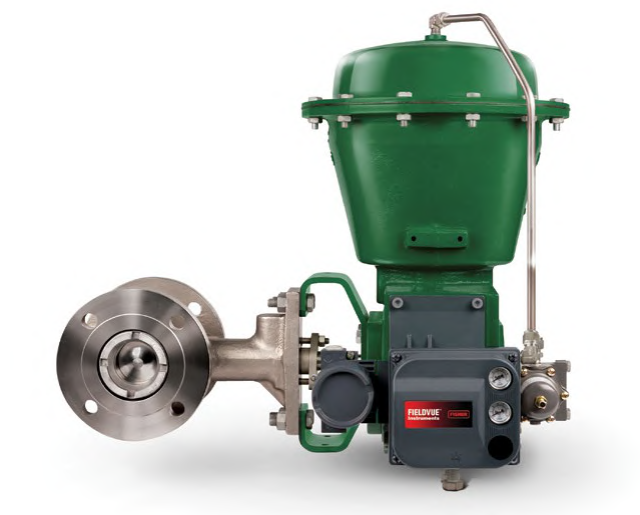
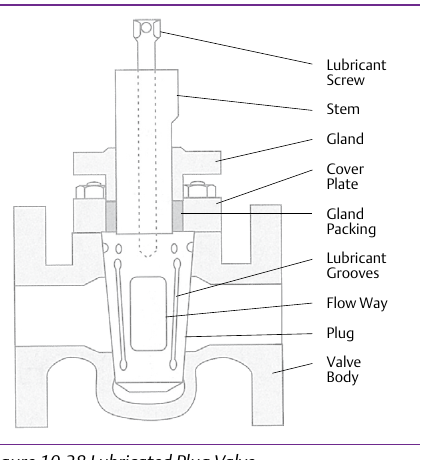

Plug Bodies — Eccentric vs. Lubricated
Eccentric Plug — Throttling Control Body

Minimizes seat contact on opening — holds tight shutoff to 1500 psi (103 bar) at 427°C (800°F) in either flow direction
Lubricated (Tapered) Plug — On/Off Isolation Cock

Lubricant film prevents seizing while holding a seal — not a throttling body; ruled out wherever lubricant contamination is a liability
After Control Valve Handbook, 6th ed., Figs. 3.13 & 10.38 — used directly, right panel's own printed labels retained (Style Guide Sec 6.3). Component Index: cvh-cmp-eccentric-plug-valve-body, cvh-cmp-lubricated-plug-valve.